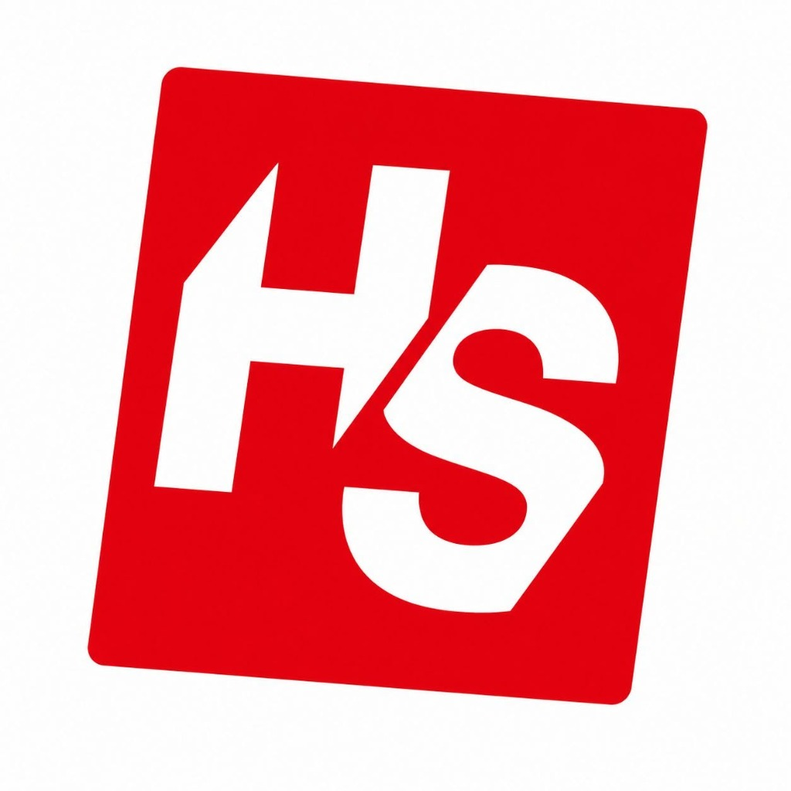
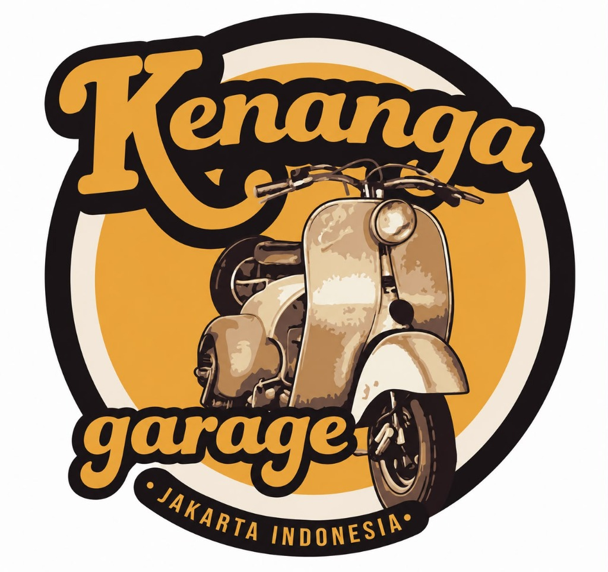
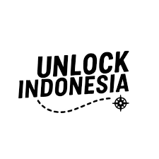
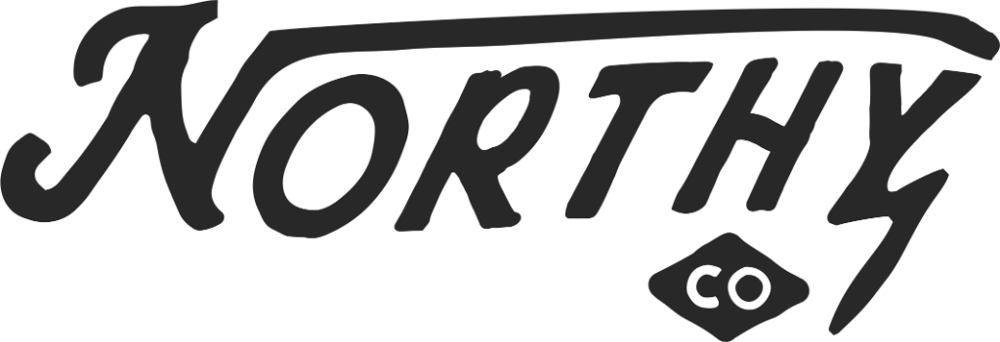

VespaKita bantu komunitas kamu mendapatkan sponsor untuk kegiatan touring, gathering, atau jambore — lewat jaringan brand yang sudah kami bangun. Terbukti: Road to Jakarta (Vespa 60's Yogyakarta) berhasil kami carikan sponsor dari 4 brand nasional.
Road to Jakarta — perjalanan Vespa 60's Yogyakarta menuju Jamnas Vespa 60's Indonesia 2026 — didukung 4 sponsor yang kami hubungkan langsung.




Filter berdasarkan kota atau cari nama komunitas.
Ceritakan rencana kegiatan komunitas kamu — touring, gathering, atau jambore. Tim VespaKita akan bantu carikan sponsor lewat jaringan brand yang sudah kami bangun, gratis tanpa biaya apapun.
Ajukan Event Kamu